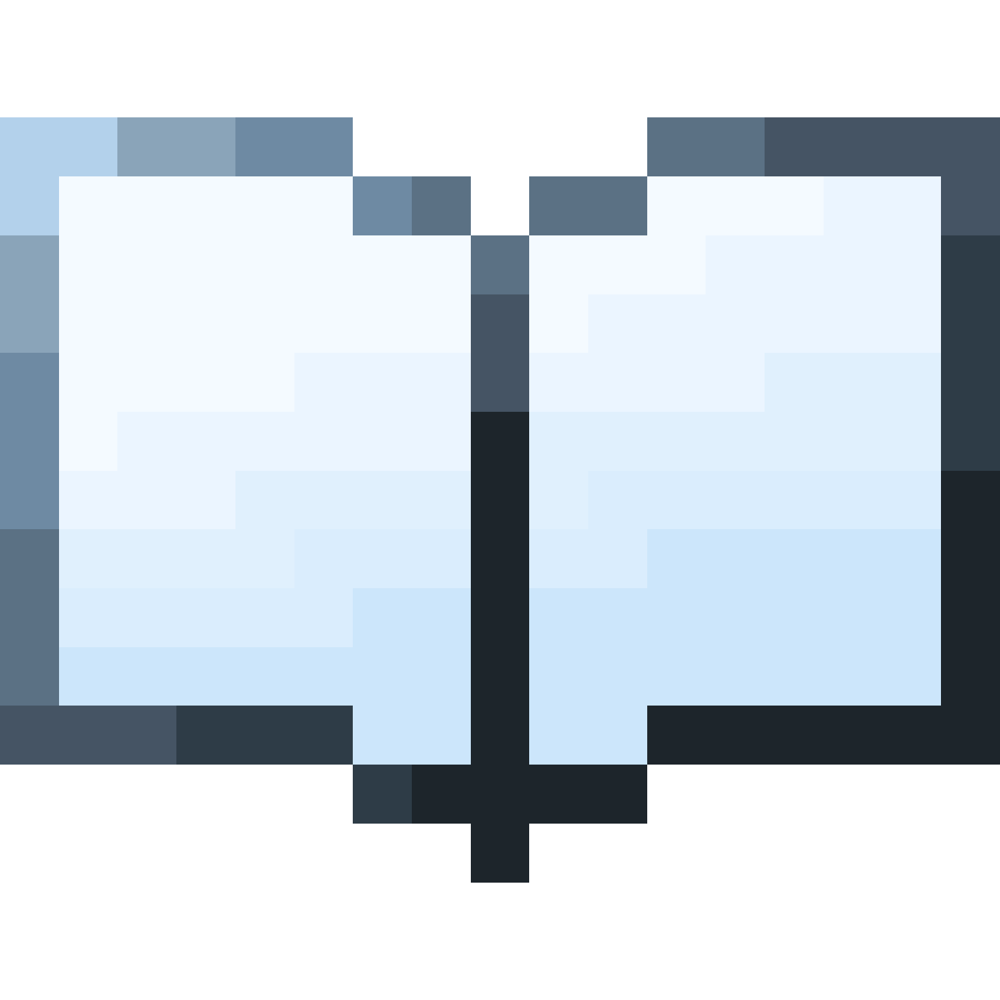

Profile
super-hiko14.com
→
About
about.super-hiko14.com
→
高級ジェネ™
kokyujene.super-hiko14.com
→
Tools
tools.super-hiko14.com
→
日記
super-hiko14.me
→
Legal
legal.super-hiko14.com
→
Super Hiko14
.
Minecraft コマンド
高級ジェネ™
サーバーオーナー
8.14
日本/ゆきぐに | Japan/snowy place
学生
INFP-T
お問い合わせ
super-hiko14.com/contact
YouTube
@super-hiko14
-
Subs
Misskey
@KokyuJene@misskey.io
-
F
Ofuse
superhiko14
Steam
super-hiko14
Minecraft / Xbox
Super Hiko14
マシュマロ
Super Hiko14(hju5n4rxq205ql6)
MEWK
@KokyuJene@misskey.io
Github
KokyuJene
Less
More
高級ジェネ
.
Minecraft - ジェネレーター
高級ジェネ 公式サイト
kokyujene.super-hiko14.com
YouTube
@KokyuJene
-
Subs
X
@KokyuJene
Note
@kokyujene
Discord
高級ジェネ
-
·
-
LINE - OpenChat
高級ジェネ
ツミキapp
.
自分好みにカスタマイズできる勉強時間管理ツール

ツール
tsumiki.app
YouTube
@tsumiki_app
X
@tsumiki_app
Discord
ツミキapp | Tsumiki app